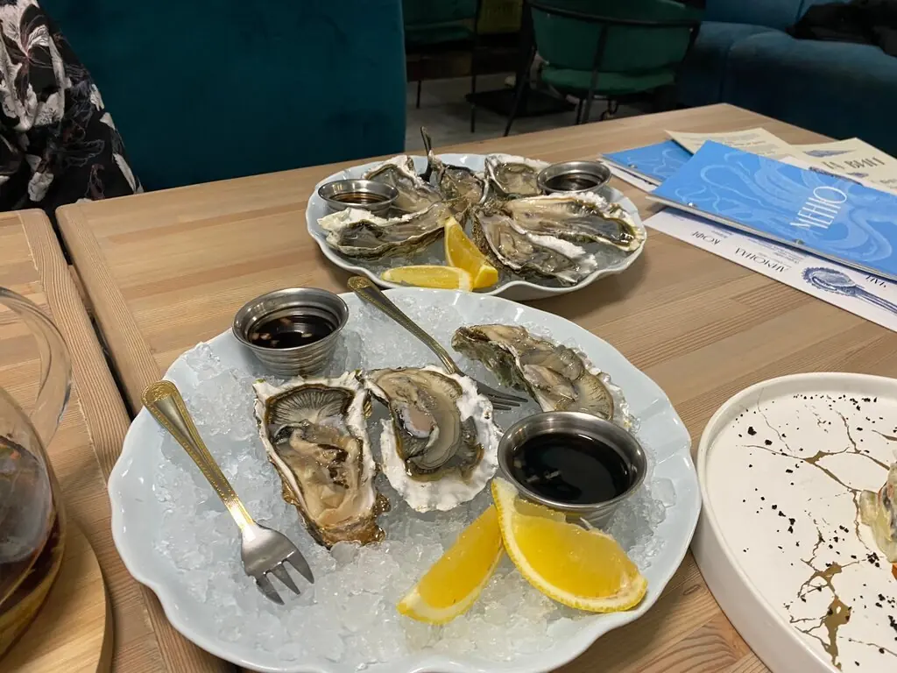
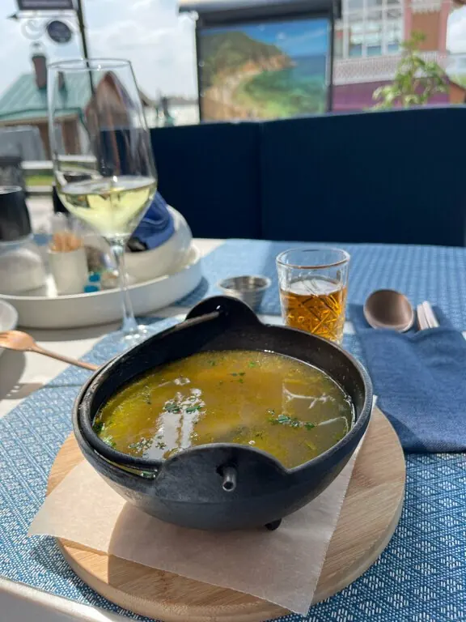
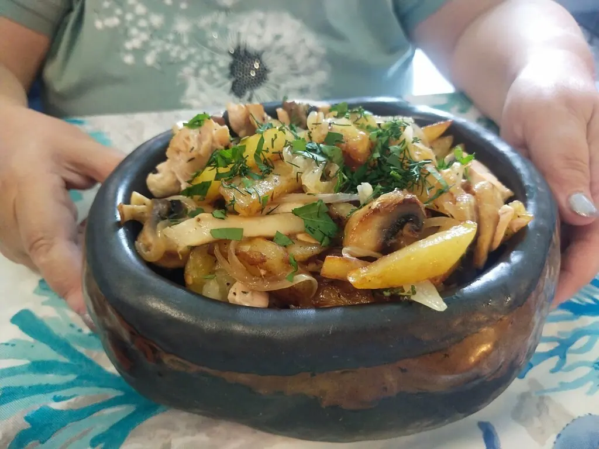
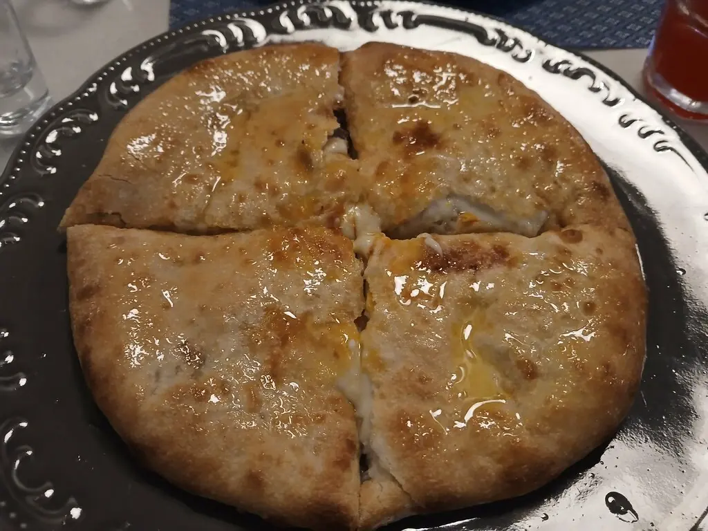
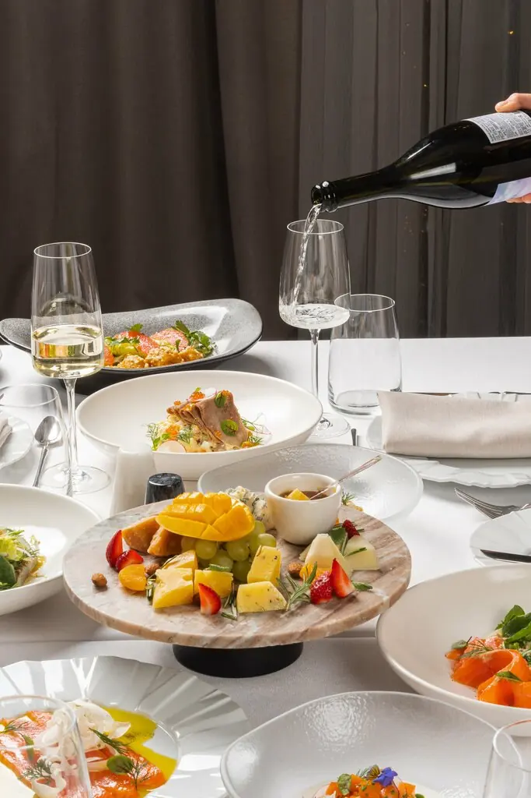

Омулевочная
Сделано в Сибири: омуль холодного копчения, устрицы со льда и камчатский краб. У входа аквариумы, а в зале тихо и красиво.
4,8 · 1173 оценки
Улов дня

Со льда
Дальневосточный гребешок-гриль1 465 ₽
Омуль холодного копчения1 100 ₽

Горячая уха
Крем-суп из камчатского краба980 ₽
Острый мисо с морепродуктами855 ₽

Паста и печь
Паста с хрустящим омулем915 ₽
С креветками в соусе биск855 ₽

Наше
Вареники с омулем и кальмаром490 ₽
Жареные пельмени с лисичками735 ₽
Часть меню с Яндекс Карт, цены уточняйте у официанта.
Аквариум на входе
Первое, что видят гости: рыбки и устрицы за стеклом. Дальше спокойный зал на 120 мест, скатерти в голубую клетку и карта бара на вечер.

Говорят
Вкусный крем-суп и свежая рыба. Ресторан тихий и красивый.Нарыйа Яковлева
Приятная атмосфера, на входе стоят аквариумы с рыбками и устрицами.Ксения Зуева
Блюда были все очень вкусные, очень уютно.Виктория Иванова